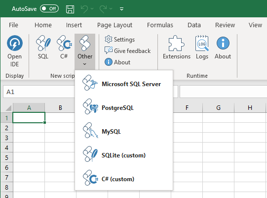
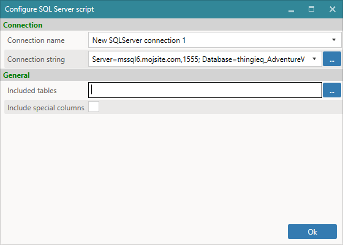
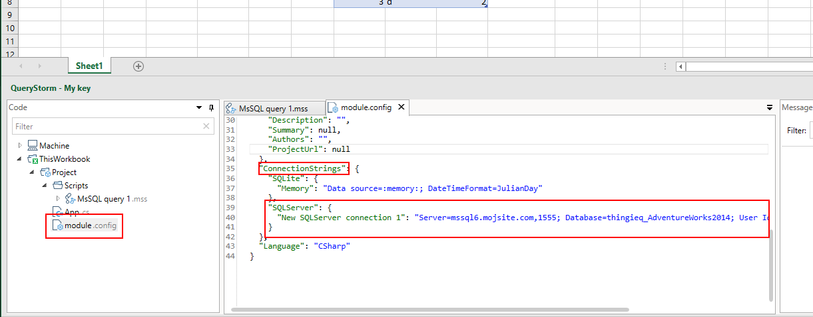

External databases
QueryStorm supports connecting to external databases, allowing you to query workbook tables alongside database tables. This makes moving data between Excel and databases (in both directions) easy and convenient.
Currently, SQL Server, Postgres, MySql, SQLite, and Redshift (via Postgres) are supported, while support for other databases may be rolled out in the future depending on user needs and requests.
Querying
To connect to a database, click the appropriate button from the dropdown menu in the ribbon.

QueryStorm will then prompt you to enter the connection details and select the workbook tables you would like to use in your script.

When the connection is established, selected workbook tables are automatically copied to the database as temp tables. Once there, they can be queried or imported into permanent tables via SQL.

While connected, any changes that you make to Excel tables are immediately synchronized to the temp tables.
Aside from workbook tables, scripts can also see the values of named ranges. These can be used as parameters in your scripts:

Only named ranges that refer to a single cell are visible as parameters.
Getting data into Excel
Query results can be written into the workbook as new tables or used to update existing ones.
You can write the results of a query into a new or existing table by selecting a cell in Excel and using the Alt+Ins shortcut key for writing results.
You can also output the results directly from the script, by using the SQL preprocessor, which is available in all SQL scripts in QueryStorm.
For example, here's how to output the results of a query into an Excel table, using the preprocessor:
1 2 | |
When this script is executed, the results of the select query will be written into an Excel table with the name dpt. If the table does not yet exist, it will be created starting at the currently selected cell. If a table called dpt does exist in the current workbook, it will be overwritten by the results of the query. However, only table columns that exist both in the workbook table and in the results are updated. If the workbook table has any columns that are not present in the query results (e.g. calculated columns), those columns will be left intact.
To update multiple tables from the same script, we can use multiple output directives:
1 2 3 4 5 | |
Managing connection strings
When entering connection details, you must give your connection string a name.
The script file stores the connection name, while the actual connection string is stored in the module.config file:

Referencing the connection string by name (instead of keeping it in the script file) lets scripts share connection strings. This makes it easier to e.g. redirect all scripts from a development database to a production database.
Securing credentials
Connection strings can contain sensitive data i.e. database credentials. It's usually not a good idea for developers to leave their database credentials inside scripts that are shared with end-users. This is an important consideration when sharing the workbook itself or when building and sharing custom Excel SQL Functions.
For this reason, connection strings can be templated. Instead of the actual username and password, the developer puts placeholders inside the connection string.
Two placeholders are supported:
- {username:id_of_the_credentials}
- {password}
The placeholder for the username must provide the identifier of the credentials. The identifier is used for storing and retrieving the credentials.
The following is an example of a templated connection string:
Server=mssql6.mojsite.com,1555; Database=thingieq_AdventureWorks2014; User Id={username:my_creds_123}; Password={password}
When a script attempts to connect using the above connection string, it will search for stored credentials with the id my_creds_123. If it does not find them, the user will be prompted to enter them:

The credentials are then inserted into the connection string instead of the placeholders and a connection attempt is made. If the attempt fails, the prompt reappears. If the attempt succeeds, the credentials are encrypted and stored in a local file for future use.
Once the credentials are stored, they are used automatically in the future every time a connection is attempted with a connection string that uses the same credentials ID (e.g. my_creds_123). If a connection attempt fails in the future, the user will again be prompted for their credentials.
Stored credentials are encrypted using the Windows Data Protection API and stored in a file in the user's AppData directory. Only the user that created the file can decrypt the data.